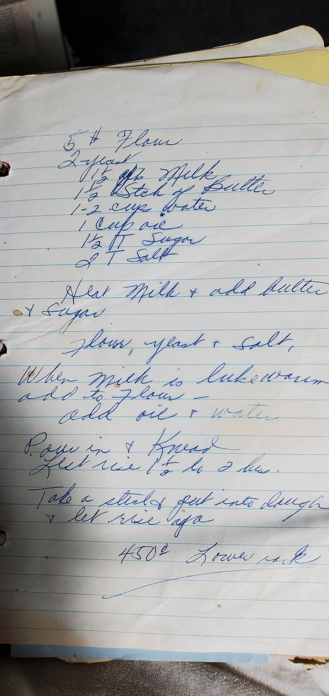

Ingredients
Dough
- 5 lb flour
- 2 packets active dry yeast
- 1½ oz milk
- 1½ sticks butter
- 1–2 cups water
- 1 cup oil
- 1½ T sugar
- 2 T salt
Note: This card covers the dough. The original recipe is a handwritten guide — dough quantities make a large batch.
Original Recipe Card

Handwritten recipe card
Directions
- Heat milk and add butter and sugar. Stir until butter melts. Let cool to lukewarm.
- In a large bowl, combine flour, yeast, and salt.
- Once the milk mixture is lukewarm, pour into the flour mixture. Add oil and water.
- Mix together, then turn out and knead until smooth and elastic.
- Cover and let rise 1½ to 2 hours until doubled.
- Punch down. Take portions of dough, shape into circles, and top each with meat filling. Let rise again briefly.
- Bake at 450°F on the lower rack until golden and cooked through.
Tip: Lower rack at high heat gives the bottom of the sfeeha that characteristic crisp — don't skip it.